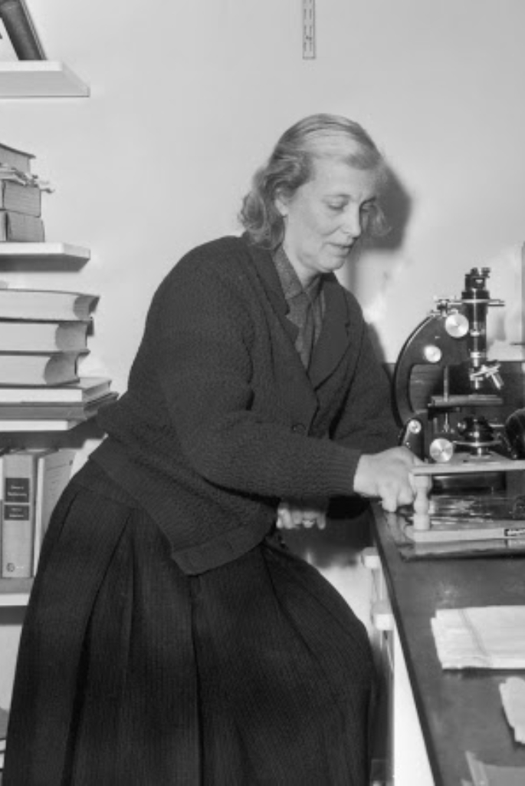

(El Cairo, 12 de mayo de 1910 - Londres, 29 de julio de 1994)

Dorothy Crowfoot nació en El Cairo el 12 de mayo de 1910. Obtuvo el Premio Nobel de Química en el año 1964 por la determinación de estructuras de sustancias de interés bioquímico mediante rayos X.
Se interesó en la química y cristales desde que tenía diez años, interés que fue alentado por el doctor A.F. Joseph, un amigo de sus padres quien le dio productos químicos y ayudó durante su estancia allí para analizar ilmenita.
La mayor parte de su vida laboral la pasó como miembro oficial y tutor en Ciencias Naturales en Somerville, como responsable de la enseñanza de la química en universidades para mujeres.
Se convirtió en profesora de la Universidad en 1946, lectora en cristalografía de rayos X en 1956 y profesora investigadora de la Royal Society en 1960.
Investigó la insulina y la difracción de rayos X, y posteriormente el calciferol o vitamina D2 y el antibiótico gramicidina.
Hodgkin culminó así la aventura científica iniciada por Alexander Fleming en 1928, con su descubrimiento casual de la penicilina. Conocer finalmente su estructura molecular tridimensional permitió optimizar la fabricación del primer antibiótico, perfeccionarlo y además impulsó el desarrollo de nuevos fármacos.
Dorothy nunca se quejó de haber sufrido discriminación por ser mujer, y eso que llegaron a sacarla en volandas de un prestigioso club científico de la Universidad de Oxford por el hecho de ser mujer, o del trabajo extra por haber criado a sus tres hijos, muchas veces sin el apoyo de su marido, que a menudo estaba trabajando en otra ciudad o en otro continente. No obstante, reconoció que la principal traba en su carrera fue padecer una enfermedad discapacitante (artritis), que no sólo le causaba grandes dolores, sino que fue deformando su principal herramienta de trabajo, sus manos, con las que tenía que manipular los diminutos cristales de las biomoléculas para registrar sus difractogramas. Pero también supo sortear ese enorme escollo sin perder la sonrisa, e incluso se ufanaba de no haber perdido ni un cristal en el trayecto entre la zona de preparación y el difractómetro, en el cual tenía que subir por una escalera de manos. La mayor parte de sus experimentos los realizó en unas condiciones cuando menos insalubres, en un cuchitril en el sótano del Museo de Ciencias Naturales de la Universidad de Oxford, institución que no le dio el puesto que se merecía ni siquiera tras haber obtenido el premio Nobel.
Murió en Londres el 29 de julio de 1994 a la edad de 84 años, dejando un valioso legado a la ciencia.